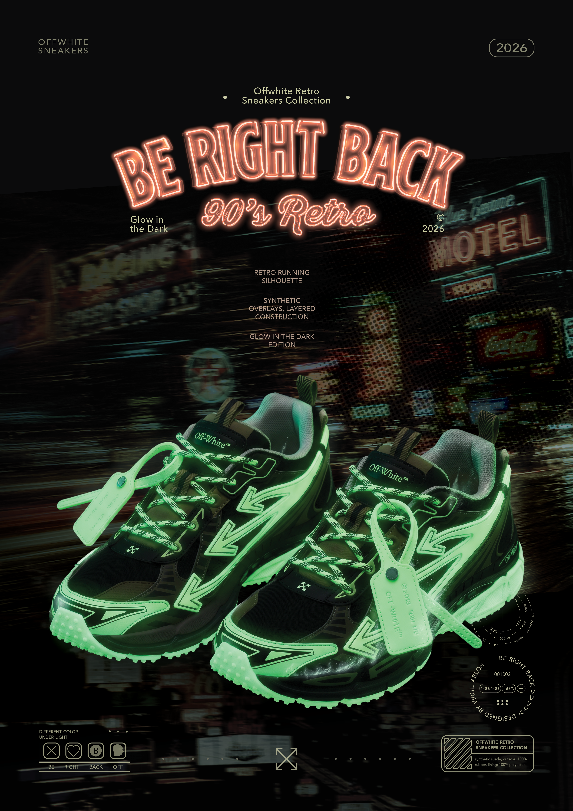

Graphic Design:
Be Right Back
년도
작업 도구
크기
Year
Medium
Measurement
2026
Adobe Suite, Midjourney, Nano Banana
A2

Context
오프화이트의 Be Right Back 시리즈 속 Glow In the Dark 스니커즈를 소개하는 포스터를 제작하였습니다.
Designed a promotional poster that introduces Glow in the Dark Sneakers from Be Right Back retro series.
Strategy
브랜드 특유의 스트리트 무드를 표현하는 동시에 컬렉션의 레트로 테마를 강조하기 위해 Midjourney를 활용하여 1990년대 미국의 거리 풍경을 연상시키는 이미지를 제작하였습니다. 또한 이미지의 분위기와 조화를 이루는 레트로 네온사인 스타일의 타이틀 그래픽을 디자인하여, 컬렉션의 컨셉이 시각적으로 일관되게 전달되도록 구성하였습니다.
To capture the brand’s distinctive streetwear aesthetic while emphasizing the collection’s retro theme, I used Midjourney to create imagery inspired by American street scenes from the 1990s. I also designed a retro neon-sign-inspired title graphic that complements the imagery, creating a cohesive visual direction that reinforces the collection’s overall concept.